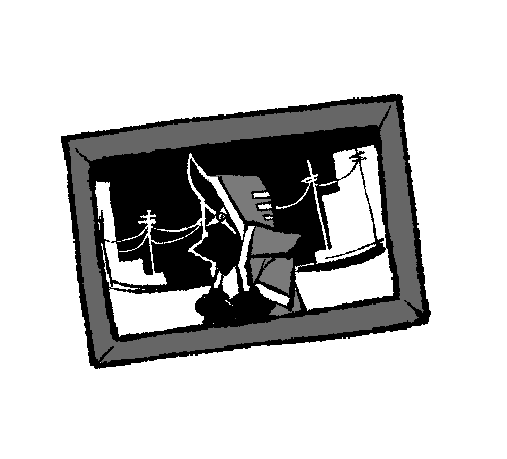

뒤바뀐 운명, 일그러진 목적...
'이데올로기의 눈 (Eye of Ideology)'은 Kalawakan이 2021년 12월 03일에 제작,
2022년 9월부터 대략 10명이 넘는 친구들과 함께 본격적인 세계관 설정 구축을 끝내
2024년 5월 지금까지도 계속되고 있는 나름 대규모 (자칭) 세계관입니다.
이 사이트는 세계관의 설정 및 기록 보관을 위해 만들어졌습니다.
내용은 언제든지 바뀌고 수정되고 추가될 수 있습니다.
장르 : 범죄물, 인외인간, 근미래, 디스토피아
DISCORD SERVER OPEN!

미디어 갤러리
이미지를 클릭하면 미디어 갤러리(연성) 페이지로 접속합니다.

캐릭터 신청
이미지를 클릭하면 캐릭터 신청을 위한 페이지로 접속합니다.
ABOUT
안녕하세요 저는 Kalawakan (칼라와칸) 그리고 시조입니다
칼라와칸은 제가 좋아하는 노래 제목에서 따왔습니다
거의 3년동안 혼자 자캐 콘텐츠를 만들다가 최근에서야 공개적인 곳으로 나왔습니다
Html css을 배워본 적이 1번도 없어 오로지 야매로만 만든 사이트입니다...
그래도 즐겨주시면 좋을 것 같네요
Credit
Main page Banner by jighwa00
Character gif by BITTERZHOUSE
Character info Image ( ⩌ᴗ⩌ ) by solarSUN
Character profile gif h4ck3r% . by tiki
Character info Image USACCS by yurye
Character design folder98 by bomal